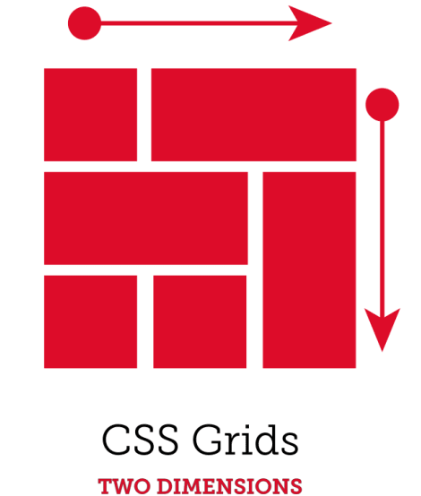

Tema 2
La herramienta CCs Grid permite al usuario administrar los recursos de un sitio web, de manera que éste se pueda visualizar de una manera más organizada referente a una cudricula y la distribución dentro de ella, manejando estilos de diseño llamativos con los cuales poder atraer al cliente.
